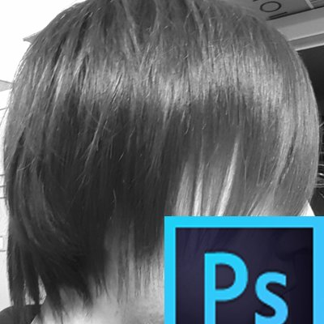

About This Site
このページは2年間都内でコーダーとして勤務していたRikuのポートフォリオサイトです。
これまでに身につけたスキル、自身の趣味などをまとめています。
このページを閲覧していただいているあなたに、私のことをもっと深く知ってほしいと思い作りました。
About me
Works
現在閲覧いただいている当ポートフォリオサイトはテンプレートは使用せず、ゼロイチで作成しているため少しでも参考になれば嬉しいです。
-
 Riku'sPortfolio site
Riku'sPortfolio site -
-
-
-
-
当ポートフォリオサイトです あとでテキスト入れる＠当ポートフォリオサイトです あとでテキスト入れる＠当ポートフォリオサイトです あとでテキスト入れる＠当ポートフォリオサイトです あとでテキスト入れる＠当ポートフォリオサイトです あとでテキスト入れる＠当ポートフォリオサイトです あとでテキスト入れる＠当ポートフォリオサイトです あとでテキスト入れる＠当ポートフォリオサイトです あとでテキスト入れる＠当ポートフォリオサイトです あとでテキスト入れる＠当ポートフォリオサイトです あとでテキスト入れる＠当ポートフォリオサイトです あとでテキスト入れる＠当ポートフォリオサイトです あとでテキスト入れる＠
My Skill
-

Living Standardのドキュメントに準拠した"セマンティクス"なコーディングが得意です。
-

前職の経験でスケーラブルなスタイリングが得意です。IEのサポート終了後、昨今のCSSの進化が早く追い切れてない部分があります(汗)
-

基本的なオブジェクト指向の概念は理解出来ており、簡単なDOM操作は可能です。まだ実務ではほとんど触っていないため、HTML/CSSに比べると未熟です。今後はvue.js等のフレームワークまで会得出来ればと思っております。
-
レスポンシブ対応が可能です。当ポートフォリオもレスポンシブ対応済ですので是非スマホでも閲覧ください。
-

Gitを用いた開発経験があります。個人の開発環境でもGitを用い開発を行っております。
-
SEOを考慮したマークアップが行えます。ただし、昨今のクローラーでのセマンティックタグなどによるコーディングの重要性は薄くなってきているのかなという印象です。
Profile
これまでの私の人生を一緒に振り返ってみましょう。
生まれは埼玉県ですが、その後すぐに千葉県に引っ越しているため埼玉で暮らした記憶は皆無でほぼ千葉出身のようなものです。
現在でもサービスが続いている「ラグナロクオンライン」通称:ROを中学2年生の時に始めました。
併せてブラウザゲームをいくつか触り、この頃からネトゲ廃人の道を歩み始めることになる。
初めて友達の家で「ギルティギア#リロード」通称:青リロを触り格闘ゲームの楽しさを知りました。
また、初めてバイト(コンビニ)を始めたのが高校3年生の時でした。
貯めたお金で初めてネトゲ用のパソコンを買った時は凄いル嬉しい気持ちになったのを覚えています。
地元に新しくオープンしたゲームセンターでしばらくオープニングスタッフとしてアルバイトをしておりました。
某ギルティギアの有名プレイヤーが社員として常駐しており、初めて会った時はとても興奮したのを覚えております。
20代に入り、「さすがにこのままアルバイト生活もな...」と危機感を覚え(遅い)職業訓練校のWEBデザインスクールへ入学しました。
半年という短い時間ですがこの学校でHTML/CSS/各adobeソフトの基本的な使い方を学びました。
※残念ながらこの学校ではJavaScriptはカリキュラムに含まれておらず。
WEBデザインスクールに半年通うも未経験からの就職に苦戦し、次第に心が折れ地元のコールセンターへ就職しました。
某コンビニエンスストアのギフトの配送管理や部下の動態管理、またクライアントのミーティングなども行い平凡な社会人生活を送ります
約7年ほど勤め30代を機に転職を決意。
ナイトレジャーの口コミサイトを運営する会社にコーダーとして転職をしました。
プライベートでも訪れた経験がないナイトレジャー系だったので不安はありましたが、会社の人に恵まれHTML/CSSの基礎から再度勉強しつつ働く事ができました。
自分がまだスキル的にも未熟だったにも関わらず退職する際に応援してくれた人。実際にIT業界に飛び込んでから応援してくれた人。飛び込んだあとも現場でサポートしてくれた人。全ての人に感謝しております。
今まで培ってきたスキルを他のエンジニアの人にもシェアできるような人間になりたいと思っております。今は教わることのほうが多いですが(笑)
WEB業界のトレンドや技術は目まぐるしく変化していきます。
これからは時代に取り残されないようなエンジニアとして成長していけたらいいなと思っております。
まだまだ若輩者の自分ですが生暖かく見守っていただけたら幸いです。
Like
私の趣味や好きなものを載せておきます。
- オンラインゲーム全般
- 映画鑑賞
- ネット配信
Contact me
最後までご覧いただきありがとうございました。このサイトを通して私のことを少しでも知っていただけたのなら嬉しいです。もしこのサイトや私について何かコメントがありましたら、下記フォームをご利用ください。